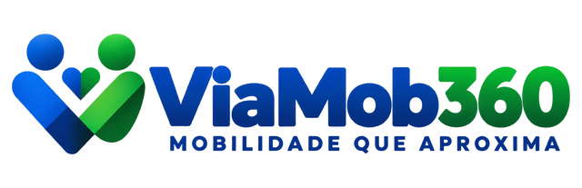
O site público da plataforma: página inicial, Chat com a Central, formulários de interessados, páginas institucionais e como editar tudo pelo painel.
| Produto | ViaMob360 · Mobilidade que aproxima |
| Versão do manual | 1.0 — outubro de 2026 |
| Para quem | Visitantes (passageiros, motoristas, empresas) e a equipe que mantém o conteúdo |
| Manuais relacionados | Manual do Painel Web ViaMob360 · Manual do App ViaMob360 |
O site é a porta pública da plataforma ViaMob360: apresenta o serviço, converte visitantes em passageiros, motoristas parceiros e empresas clientes, e mantém um canal permanente com a Central de atendimento.
No cabeçalho: o logo, o menu (Início, Como Funciona, Passageiro, Motorista Parceiro, Empresas, Segurança, Central e Contato), a busca nas perguntas frequentes e o botão Baixar App.
No banner: a chamada da plataforma, os botões Baixar App para Passageiros e Seja Motorista Parceiro (abre o pré-cadastro), os selos, o painel de números à direita e o selo da cidade (toque para trocar de cidade).
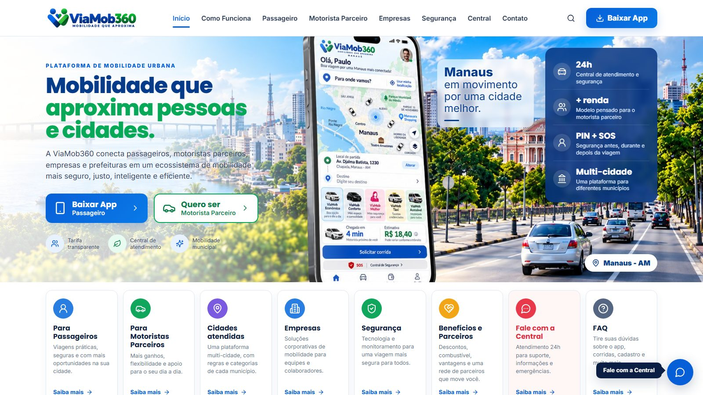
Logo abaixo, oito cartões levam a cada assunto: Passageiros, Motoristas Parceiros, Cidades atendidas, Empresas, Segurança, Benefícios e Parceiros, Fale com a Central (abre o chat) e FAQ. Em seguida, o bloco do motorista parceiro (ganhos transparentes, com um exemplo do app do motorista) e o Chat com a Central embutido na página.
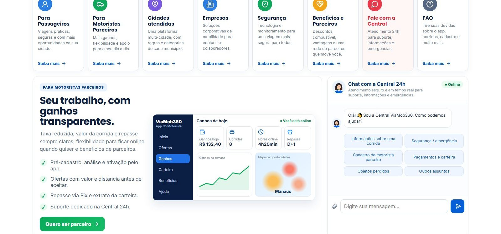
"Como funciona" mostra a jornada do passageiro em quatro passos. Em "Para passageiros", as categorias são as da cidade escolhida (as cadastradas em Tarifas e zonas no painel).
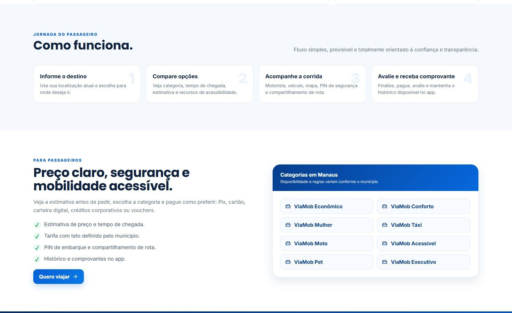
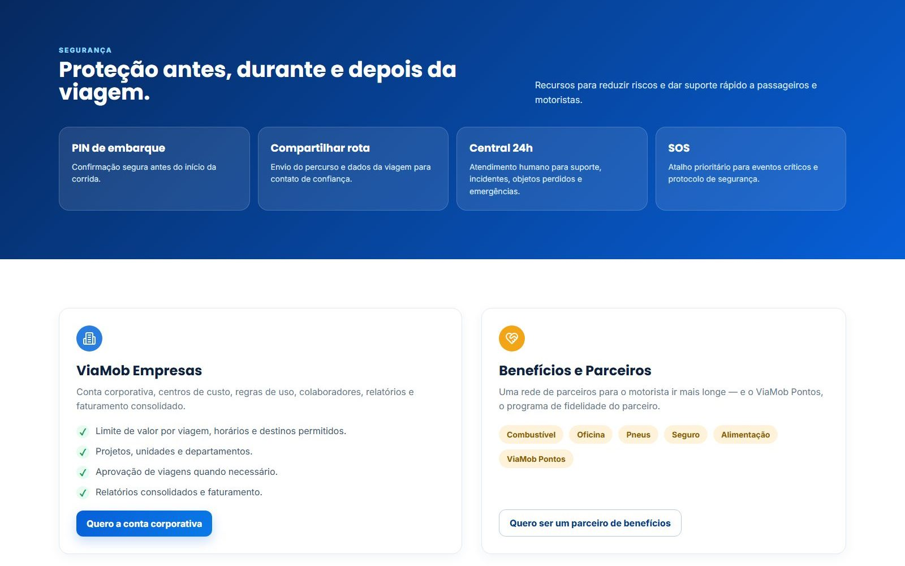
As cidades atendidas são os municípios cadastrados na plataforma. Nas perguntas frequentes há uma busca por palavra-chave; sem busca, aparecem as perguntas marcadas para a Home. Se a busca não achar nada, o site oferece o chat.
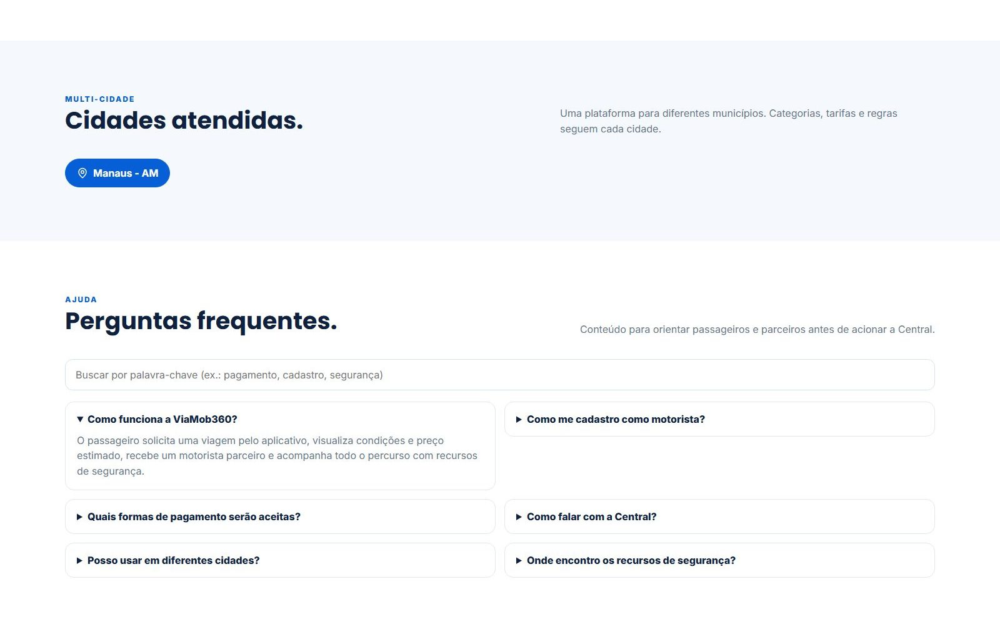
A chamada final traz os botões das lojas (App Store e Google Play) e o atalho para a Central. O rodapé tem os links por público, a ajuda, as páginas institucionais, as redes sociais e a cidade escolhida.
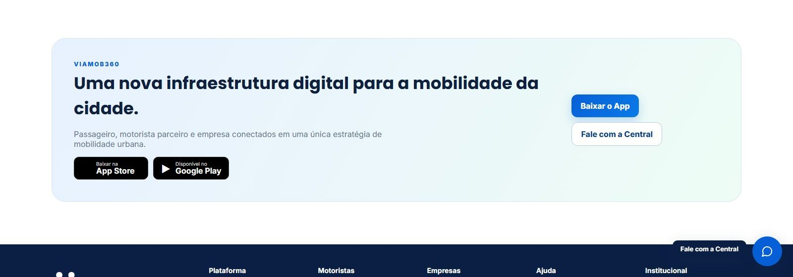
Disponível em todas as páginas (botão redondo com a atendente, no canto inferior direito) e embutido na página inicial. É um atendimento real: cai na fila da Central no painel (OmniChannel).
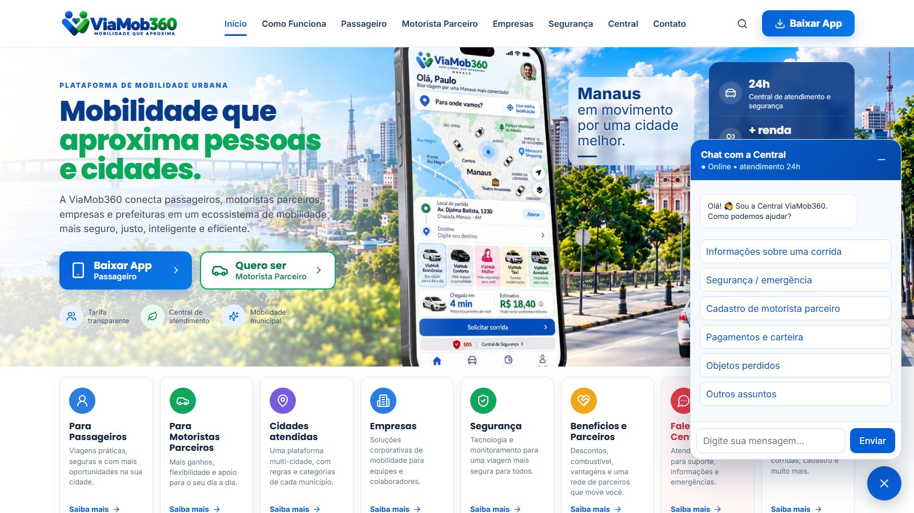
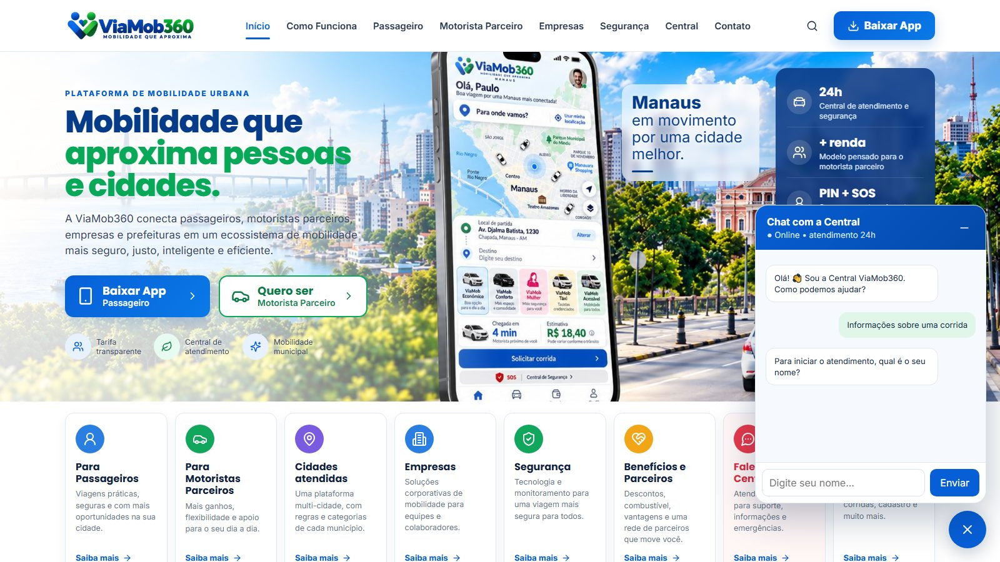
Do lado da Central, o atendimento aparece em com o nome e o assunto informados (veja o Manual do Painel Web, seção 18.1).
Os formulários abrem em uma janela sobre a página e são enviados para o painel, em .
| Formulário | Onde abre | Campos principais |
|---|---|---|
| Motorista parceiro (pré-cadastro) | "Seja Motorista Parceiro", "Quero ser parceiro", rodapé → Pré-cadastro | Nome, CPF, celular, e-mail, município/UF, veículo e mensagem |
| Empresa | "Quero a conta corporativa", rodapé → Soluções Corporativas | Responsável, razão social, CNPJ, contato, município, colaboradores estimados |
| Contato | Menu → Contato, rodapé | Nome, contato, assunto (Dúvida, Sugestão, Reclamação, Prefeitura / órgão público, Imprensa, Outro) e mensagem |
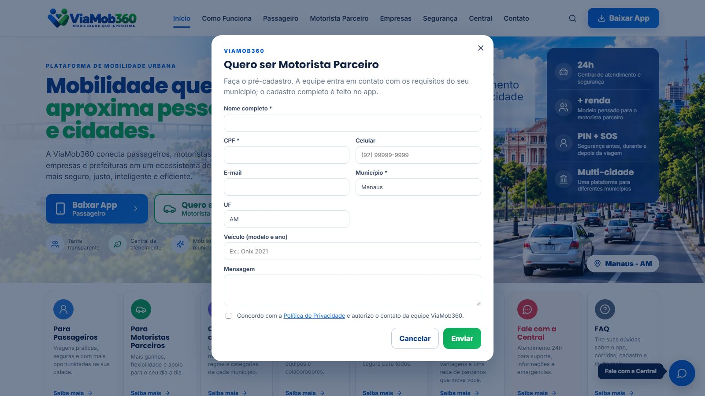
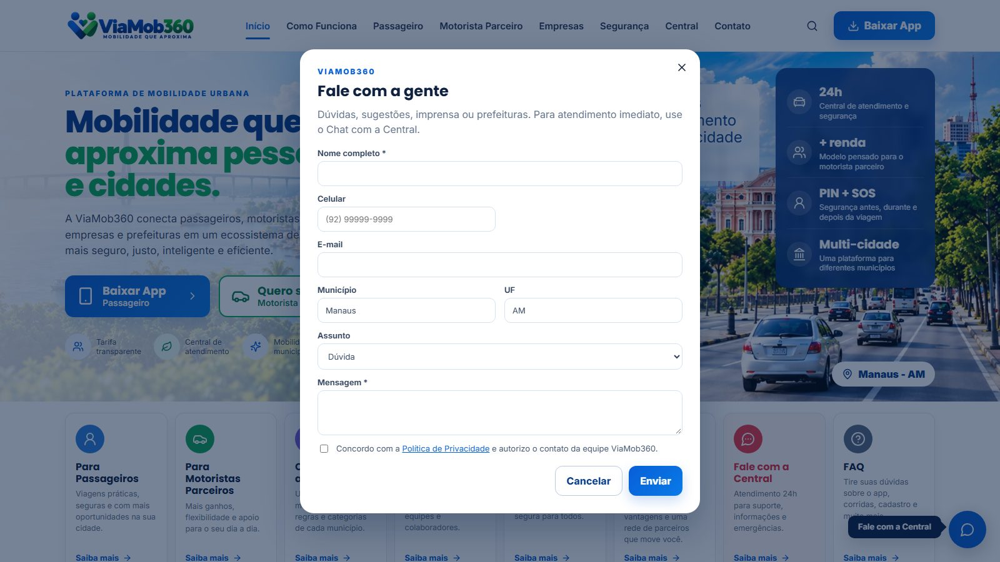
As páginas do rodapé (Quem somos, Política de Privacidade, Termos de Uso, Política de Cookies…) ficam em /paginas/<endereço> e são escritas no painel em Markdown.
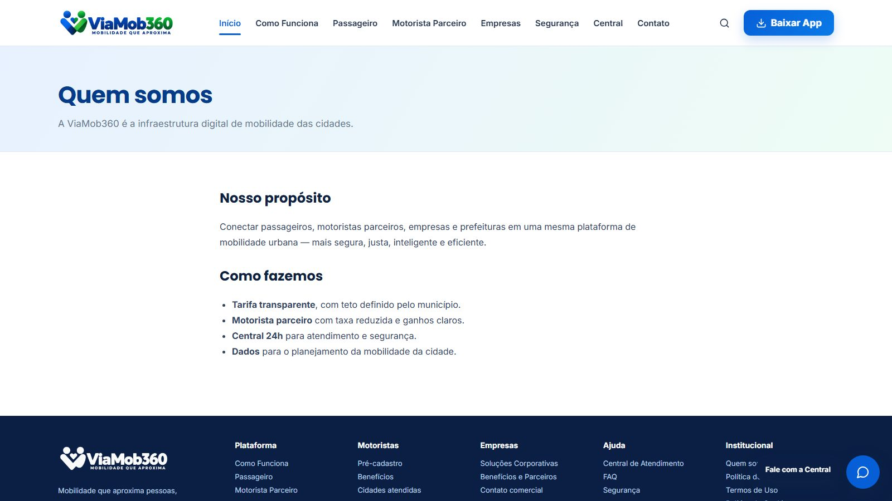
Avisos: o painel pode publicar uma faixa no topo (não atrapalha a navegação) ou uma janela na entrada (para o que é realmente importante, como operação suspensa por chuva). Cada aviso tem período de exibição; quem fecha não vê de novo até o aviso ser editado.
Quem pede carro pelo WhatsApp recebe um link /corrida/<código>. A página mostra a situação em tempo real (procurando motorista, a caminho, chegou, em viagem, finalizada), o primeiro nome do motorista, o carro e a placa, e o carro no mapa enquanto a corrida estiver ativa (com o botão "Abrir no Google Maps"). Pode ser enviado para a família acompanhar. Depois de finalizar ou cancelar, a posição deixa de aparecer. O código é aleatório e a página não aparece em buscadores.
Quando o robô do WhatsApp gera um Pix (corrida no modelo percentual, pendência do passageiro ou mensalidade do motorista), o botão Pagar com Pix abre /pix/<código>: o valor, o QR Code e o botão Copiar código Pix, com o prazo. Assim que o pagamento é confirmado a página mostra Pagamento confirmado sozinha. Pix vencido ou cancelado: a página orienta a pedir outro no WhatsApp. O código é aleatório e a página não aparece em buscadores.
O site se adapta à tela: o menu vira o botão ☰, os cartões se reorganizam e o chat ocupa a largura da tela.
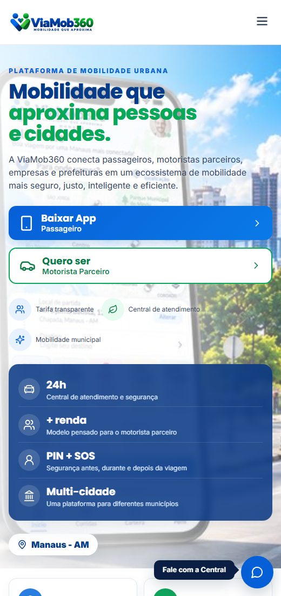 |
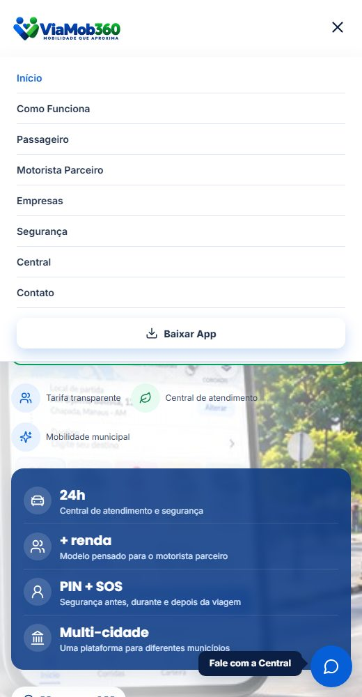 |
Tudo no Painel Web, em . As mudanças aparecem no site aberto em segundos, sem recarregar.
| O que mudar no site | Onde no painel |
|---|---|
| Logo, cores, nome e slogan do site | Configuração do site → Identidade |
| Chamada, título, texto e banner do topo; selos; textos dos botões | Configuração do site → Home |
| Painel de números do banner e o cartão de ganhos do motorista | Configuração do site → Indicadores |
| Links da App Store / Google Play, telefone, e-mail, endereço | Configuração do site → App e contato |
| Redes sociais, texto do rodapé, título e descrição para o Google | Configuração do site → Redes, rodapé e SEO |
| Saudação, assuntos e a pergunta do nome do chat | Configuração do site → Chat com a Central (os mesmos assuntos valem para o app) |
| Perguntas frequentes (e quais aparecem na Home) | Perguntas frequentes |
| Páginas institucionais | Páginas (local "Rodapé", "Menu do cabeçalho" ou "Só por link direto") |
| Faixa ou janela de aviso | Avisos |
| Categorias mostradas em "Para passageiros" | Tarifas e zonas → Categorias de serviço (de cada cidade) |
| Cidades atendidas | Configurações → Clientes da plataforma (municípios ViaMob360) e o cadastro de cada município |
| Fila que recebe o chat do site | Parâmetros de operação, grupo "atendimento", chave puc_site (sem ela, a do app — puc_app) |
NEXT_PUBLIC_FIREBASE_*, em .env.local) e PORTAL_PATH (no .env): o caminho de dados (tenant) de onde o site lê o conteúdo e para onde vão os interessados e o chat. Mudou o valor: reinicie o servidor (em produção, refaça o build).npm install e npm run dev.npm run build (com as variáveis definidas).public/ para .next/standalone/public/ e .next/static/ para .next/standalone/.next/static/.node server.js dentro de .next/standalone (porta em PORT), com PM2 ou serviço do sistema, e Nginx/IIS na frente para o domínio e o HTTPS.lib/compartilhado/ é gerada pelo painel (npm run sync:app lá). Não edite no site.dados/** aberto (sem Firebase Auth); o site grava interessados e mensagens do chat com elas. Revisar antes da publicação.| Situação | O que fazer |
|---|---|
| O chat diz que a Central não está configurada | Cadastre uma central (PUC) no Service Desk e, se quiser uma fila própria para o site, a chave puc_site nos Parâmetros de operação. |
| Ninguém responde no chat | O atendente precisa estar com a fila (lotação) no cadastro de Usuários e fazer o check-in no OmniChannel. |
| Mudei um texto no painel e não mudou no site | Confira se a Configuração do site está com status "ativo" e se a página/pergunta está "publicada". |
| A cidade não aparece em "Cidades atendidas" | O município precisa estar em Clientes da plataforma com sistema ViaMob360 e com o cadastro do município preenchido. |
| "Internal Server Error" ao rodar o site | Pare o servidor, apague a pasta .next e rode de novo (acontece se um build foi feito com o servidor de desenvolvimento aberto). |
Manual do Site ViaMob360 · versão 1.0 · outubro de 2026. Atualize este manual quando uma seção do site ou uma regra mudar (fonte em documentacao/manual/manual-site.html; PDF com npm run docs:manual).